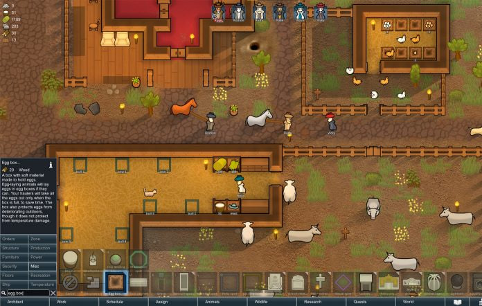

Existen casi infinitas clases de videojuegos, casi infinitas formas de llevar cada uno y, por lo tanto, sensaciones muy diferentes entre sí. Para el caso de los juegos de gestión de recursos se opta por hacer sentir al jugador como un lider, ya sea jefe de una colonia primitiva o presidente de la cadena de producción más relevante del momento, lo que se busca en el jugador es la sensación de gestor, de tomar todas las decisiones dificiles y llevar a tus subordinados al éxito.
 WeycitoslinkDe estos juegos se suele entrenar habilidades bastante codiciadas en el mundo laboral, tales como:
Se suele comenzar desde lo más bajo mientras se aprenden las mecanicas básicas, luego, con el tiempo, se va escalando hasta conseguir una posición donde se obtienen más recursos y, por lo tanto, se deben saber administrar mejor para conseguir un flujo eficiente y contínuo.